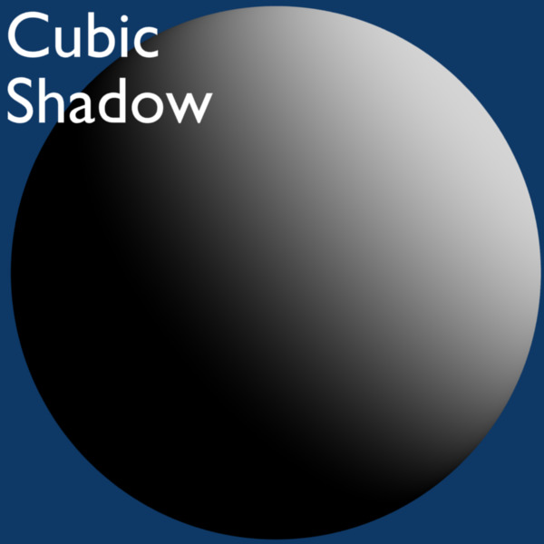

Shading¶
In the separate Shading panel six more options are available:
Shading menu, default settings.
- Emit
- Amount of light to emit.
- Ambient
Amount of global ambient color the material receives. Each material has an Ambient slider that lets you choose how much ambient light that object receives. Set to 1.0 by default.
You should set this slider depending on the amount of ambient light you think the object will receive. Something deep in the cave will not get any ambient light, whereas something close to the entrance will get more. Note that you can animate this effect, to change it as the object comes out of the shadows and into the light.
参见
Settings for Ambient Occlusion and Environment Lighting can be found in the World tab, with parameters affecting both these lighting components found in the panel.
- Translucency
- Amount of light from the back side that shows through.
- Shadeless
- Disables the calculation of any shading. This makes material insensitive to light or shadow, resulting in a solid, uniform color for the whole object.
- Tangent Shading
- Use the material’s tangent vector instead of the normal for shading, i.e. for anisotropic shading effects (like soft hair and brushed metal). This shading was introduced in 2.42, see also settings for strand rendering in the menu further down and in the Particle System menu.
- Cubic Interpolation
Use cubic interpolation for diffuse values, for smoother transitions between light areas and shadowed areas. Enhances the perceived contrast.

Without Cubic enabled.
With Cubic enabled.
{kind=link}